The Beginner Method
The beginner method is an easy, intuitive way to solve the cube. It is not meant to get fast times, but
is the best way to start learning.
Note: in the pictures in this section, the blue squares on the cube are irrelevant to the step and are
meant to be ignored.
Step 1: Daisy
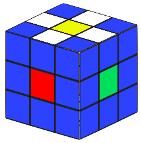
The first step to solve a 3x3 cube is to make the "daisy," or "lily". This means having
the yellow center completely surrounded by white edges (the corner pieces don’t matter.)
There is no algorithm to achieve this; you just figure this out on your own.
If you're stuck, try:
- Placing the white edges next to the yellow center one by one.
- If the piece you’re trying to place is not yet next to the yellow center, a good way
to start is by moving it to the middle layer of the cube (holding the yellow center
on top).
Step 2: White cross
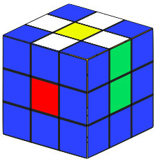
1. Align one of those white edges in the daisy with its corresponding center piece by
rotating the face with the daisy.
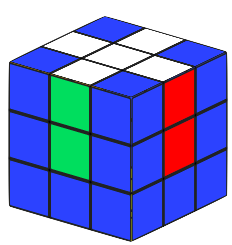
2. Hold that piece you aligned in the front, and do an F2 move (refer to the part
explaining how to read moves
here). Repeat
this process for all four white edge pieces. In the end, you should have the white cross,
which looks like this:
Step 3: White corners (first layer)
This is where you start using the algorithms.
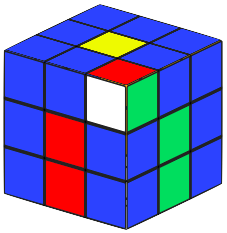
1. Look for any corner piece (one with three colors) that also has white on it on the top.
Make sure you are holding the yellow center piece on top.
2. Move that white corner in between two of its corresponding center pieces (the colors
other than white) with U moves. Here's an example of what this might look like:
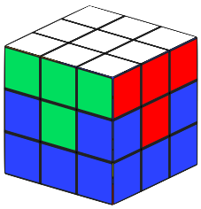
3. Once it is in the right spot, hold the piece on the right and repeat the right-hand algorithm
until the corner is
in the right spot (it must be aligned with the cross edges, with white facing down).
4. Repeat this process until all four white corners are in. In the end, you should have
solved the bottom layer:
IMPORTANT: if you can't find a white corner in the top, find one in the bottom that isn't
solved, hold it on the right, and do theright-hand algorithm once to bring it to the top.
Then continue as usual.
Step 4: Middle edges
The next step is to solve the middle edges, which solves the second layer.
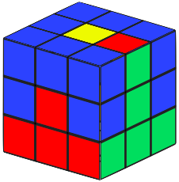
1. Find an edge piece (a piece with two colors on it) that doesn't have yellow on it
in the top layer. Then, rotate the top to get it aligned with its corresponding center.
Here's an example of what this might look like:
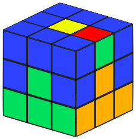
2. Rotate the top to move it away from where it needs go to. For example, if you were moving
the red-green edge, you would move it away from the slot in between the red and green
centers.
3. If the slot that the edge needs to go in is on the left and the edge is on the
right, hold the slot where the edge needs to go on the left and do
the left-hand algorithm. If the
slot is on the right and the edge is on the left, hold the slot on the right and do the
right-hand algorithm. Then you should
have something that looks like this:
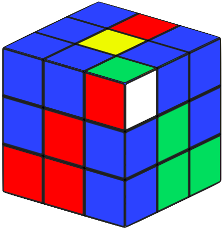
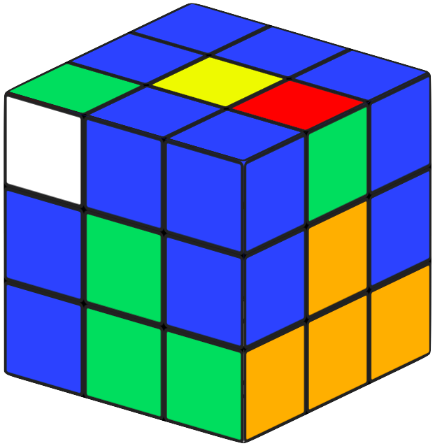
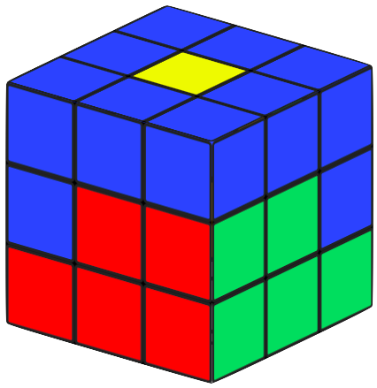
4. If you just did a left-hand algorithm,
hold the corner piece that came out on the right, and do the right-hand algorithm.
Then the edge should be in.
5. Repeat this process until all four middle edges are in.
IMPORTANT: If you can't find an edge piece in the top that doesn't have yellow, that means
all of your middle edges are in the middle, but maybe not already solved. To fix this,
choose a random edge in the top and do the same thing to put it into an edge slot that's not
already solved. This will bring an unsolved edge into the top, so you can continue as usual.
Step 4: Yellow cross
The first step to solve the top layer is to make the yellow cross. If you have trouble with the
algorithms in this section, go to the basic info page.
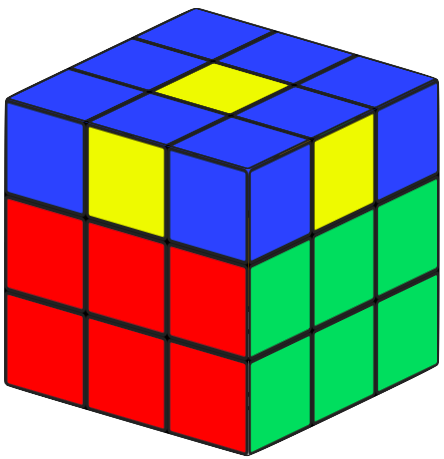
If the shape you see when looking at the yellow center piece and edge pieces is a dot, do
this algorithm (holding yellow on top): F (R U R' U') F'. If this case doesn't apply to you
(you didn't see a dot), move on.
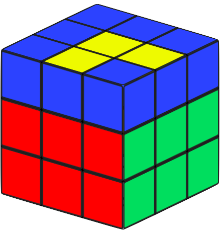
If you come across the case where two adjacent yellow edges are oriented (forming a small
yellow L shape), hold one oriented edge in the front and one on the right, then do the same
algorithm: F (R U R' U') F'.
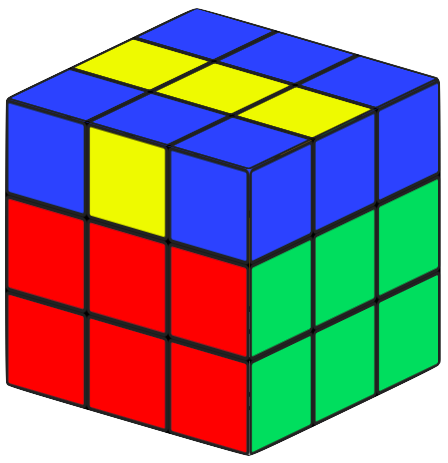
If you come across the case where two opposite yellow edges are oriented (forming a yellow
line, or I), hold the line horizontal (see right), hold yellow on top, and do the same
algorithm: F (R U R' U') F'. Once you've done this, you've made the yellow cross.
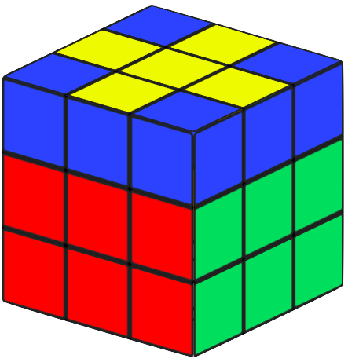
If none of the previous cases applied to you, then you're already done with the yellow
cross. It should look like this:
Step 5: Yellow edge permutation
The next step is to move all the yellow edges so they are aligned with the right centers. If you
have trouble with the algorithm in this section, remember to review the basic info page.
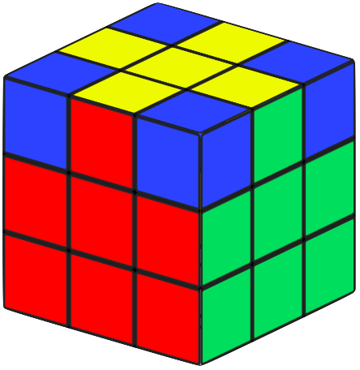
1. Rotate the yellow side until you have two yellow edges aligned with their centers. If
you can't do this, do this algorithm: R U R' U R U2 R', and then align two edges.
Here is an example of what this might look like:
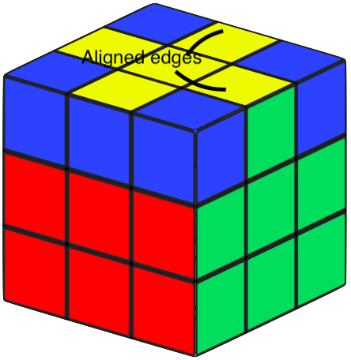
2. Hold the two aligned edges in the back and on the right. Here's an example.
3. Do this algorithm: R U R' U R U2 R', and then rotate the top clockwise to align all of the edges.
Step 6: Yellow corner permutation
The next step is to place all of the yellow corners correctly. If you have trouble with the
algorithms in this step, go to the basic info page.
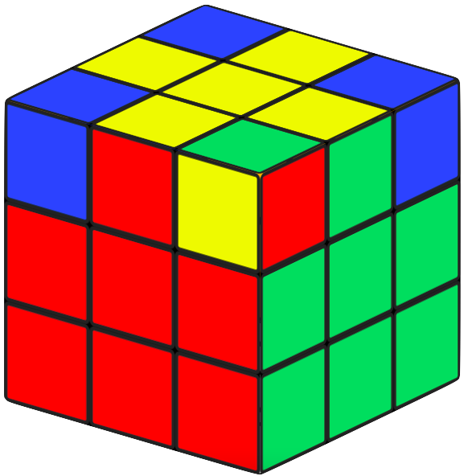
1. Look at the top yellow corners and find one that's in the correct position. Remember:
"correct position" may not look solved. Here's an example of what a corner in the
correct position might look like:
2. If you can't find one that's in the correct position, do this algorithm: U R U' L' U R'
U' L. Then you should be able to find one that's in the correct position. If you can find
one in the correct position, hold it in the front-right (like in the above image) and do the
same algorithm: U R U' L' U R' U' L. If this doesn't cause all of the corners to be in the
correct position, do the algorithm one more time.
Step 7: Solve the cube!
The final step is to orient all of the yellow corners, which will solve the cube! The only
algorithm you will be using in this step is the right-hand algorithm.
Note: from this point on, blue stickers on the cubes in the images should not be ignored.
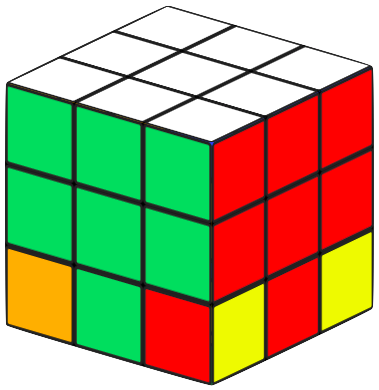
1. Turn the cube upside-down!
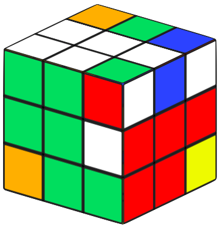
2. Hold an unsovled corner (yellow not facing down) on the bottom-right. Repeat the right-hand algorithm until the yellow
corner is facing down. Make sure that even if the corner is solved after three moves of the
algorithm, that you still do the final U' move!
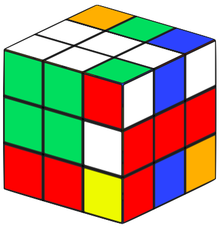
Don't worry when it gets messed up; it will all be fixed in the end.
3. Use a D or D' move (rotating the bottom, or yellow, face) to bring another unsolved
corner to the front-right. IMPORTANT: don't rotate the WHOLE cube, just rotate the bottom
(yellow) face to bring an unsolved corner to the right. Otherwise everything will just
get messed up.
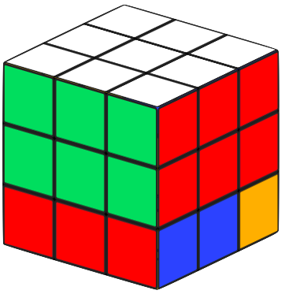
4. Orient that corner that you just brought to the bottom-right using D moves with right-hand algorithms.
5. Repeat this process until all of the yellow corners are oriented. Then you can just
finish solving the cube with a final rotation of the yellow side!
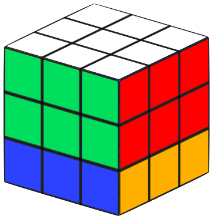
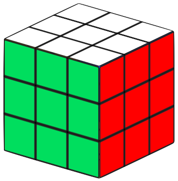
Note: if step 4, 5, 6, or 7 didn't work for you, your cube is unsolvable and needs to be taken apart
and reassembled.